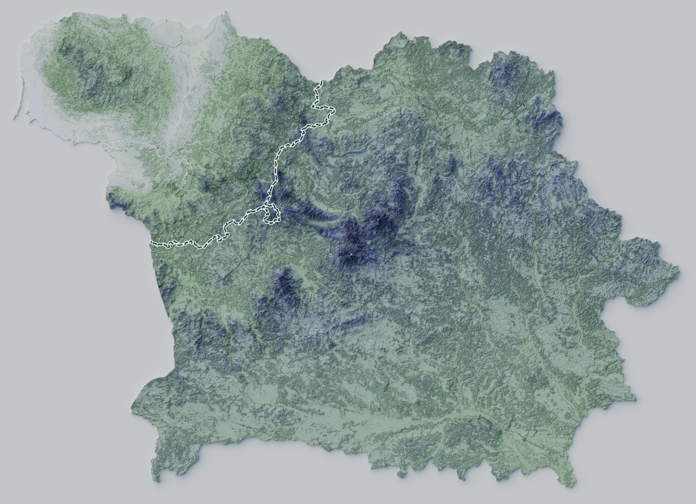

Smuggling balloons launched from Belarus drift west into Lithuania, carrying contraband cigarettes. They enter controlled airspace unannounced and at unpredictable altitude. Most drift over border districts, but when their tracks cross the approach to Vilnius airport, traffic is suspended until the airspace is clear.
Drones cross the same corridor far less often, but fly a directed course. Repeated incursions prompted a 90 km no-fly zone along the border in August 2025, and one drone that came down inside Lithuania was carrying an explosive device.